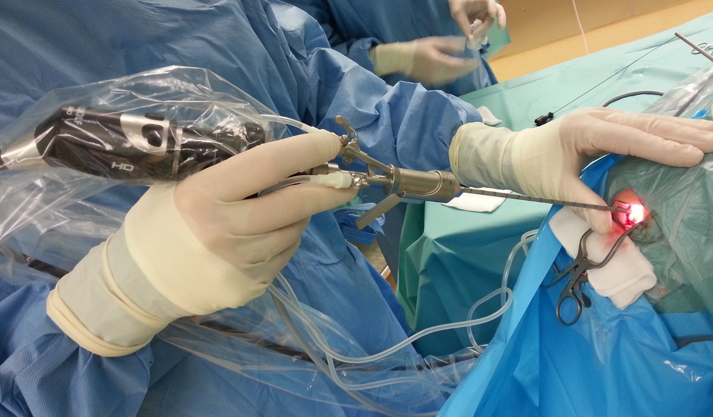

Endoskopowe leczenie wodogłowia to nowoczesna, małoinwazyjna metoda stosowana w leczeniu wodogłowia, polegająca na udrożnieniu przepływu płynu mózgowo-rdzeniowego za pomocą wprowadzanych do układu komorowego cienkich systemów optycznych z różnymi mikronarzędziami. Procedura ta stanowi alternatywę dla klasycznego leczenia za pomocą układów zastawkowych.
Wskazania do endoskopowego leczenia wodogłowia
Wodogłowie niekomunikujące (obturacyjne), np. z powodu zwężenia wodociągu mózgu (wodociągu Sylwiusza), torbieli pajęczynówki, guza w tylnej jamie czaszki lub innych przeszkód w krążeniu PMR.
Wodogłowie pokrwotoczne – w wybranych przypadkach, gdy doszło do zamknięcia naturalnych dróg odpływu płynu.
Niektóre przypadki wodogłowia wrodzonego u noworodków i niemowląt.
Wodogłowie po infekcjach – gdy dochodzi do blokady przepływu PMR.
Zabieg rzadziej wykonuje się w wodogłowiu komunikującym, ponieważ w takich przypadkach skuteczność jest mniejsza.
Rodzaje endoskopowych zabiegów stosowanych w leczeniu wodogłowia
1. Endoskopowa wentrikulostomia III komory (ETV – Endoscopic Third Ventriculostomy)
Polega na wykonaniu niewielkiego otworu w dnie komory III, co umożliwia odpływ płynu mózgowo-rdzeniowego do przestrzeni podpajęczynówkowej, omijając przeszkodę w odpływie PMR. Szczególnie skuteczna w przypadku zwężenia wodociągu Sylwiusza.
Skuteczność zależy od wieku pacjenta (najlepsze wyniki u dorosłych i starszych dzieci).
Zalety ETV:
Brak konieczności stosowania ciała obcego (zastawka, cewniki) w organizmie.
Ograniczenie ryzyka infekcji związanej z materiałem sztucznym.
U niektórych pacjentów efektywny i trwały sposób leczenia (zwłaszcza u dorosłych i młodzieży z wodogłowiem obturacyjnym).
Ograniczenia i wskazania:
Najlepiej sprawdza się w przypadkach wodogłowia obturacyjnego (tam, gdzie istnieje anatomiczna przeszkoda).
Skuteczność bywa ograniczona w przypadku niemowląt i małych dzieci (słabo wykształcone przestrzenie podpajęczynówkowe, mniejsze wymiary anatomiczne).
Zabieg wymaga dobrej widoczności i odpowiedniej budowy anatomicznej komór mózgu.
Nie jest to metoda uniwersalna – w wodogłowiu komunikującym zwykle konieczne jest rozważenie innego postępowania (np. wszczepienie zastawki lub inna modyfikacja).
2. Endoskopowa septostomia
Stosowana, gdy doszło do izolacji jednej z komór bocznych, np. w przypadku torbieli przegrody przezroczystej. Polega na wykonaniu otworu w przegrodzie międzykomorowej, aby zapewnić komunikację pomiędzy komorami.
3. Endoskopowa fenestracja torbieli
Wykonywana w przypadku torbieli pajęczynówki powodujących objawy wodogłowia.
Polega na otwarciu torbieli i połączeniu jej z układem komorowym lub przestrzenią podpajęczynówkową.
4. Endoskopowa biopsja i usuwanie zmian patologicznych
W przypadkach guzów blokujących odpływ PMR możliwe jest wykonanie biopsji lub częściowego usunięcia zmiany.
Zalety septostomii i fenestracji torbieli
Unikanie wszczepiania zastawki.
Możliwość bezpośredniego usunięcia przyczyny niedrożności.
Ograniczenia septostomii i fenestracji torbieli
Skuteczność zależy od stopnia rozległości i rodzaju przegrody/torbieli.
Jak w każdym zabiegu endoskopowym – wymagana jest odpowiednia anatomia i bezpieczeństwo manipulacji endoskopem.

Przebieg zabiegu
Znieczulenie ogólne – pacjent jest całkowicie uśpiony.
Dostęp neurochirurgiczny – wykonuje się niewielkie nacięcie skóry i nawierca otwór w czaszce (średnica ok. 5-10 mm).
Wprowadzenie endoskopu – cienkiego instrumentu z kamerą umożliwiającą dokładne uwidocznienie struktur mózgowia wraz z mikronarzędziami.
Wykonanie odpowiedniej procedury (np. wentrikulostomii).
Kontrola przepływu PMR i zamknięcie dostępu chirurgicznego.
Cały zabieg trwa zwykle 30-90 minut, a pacjent pozostaje w szpitalu przez kilka dni.
Jakie są zalety endoskopowego leczenia wodogłowia?
Brak konieczności implantacji zastawki – eliminuje ryzyko infekcji zastawki, niedrożności czy konieczności jej wymiany.
Małoinwazyjność – krótszy czas hospitalizacji i rekonwalescencji.
Niższe ryzyko powikłań w porównaniu do klasycznej wentrykuloperitoneostomii.
Jaka jest skuteczność zabiegu endoskopowego?
Endoskopowa wentrikulostomia III komory (ETV):
70–90% skuteczności u dorosłych i starszych dzieci.
50–60% skuteczności u niemowląt (młodszych niż 6 miesięcy).
80–90% skuteczności w przypadku zwężenia wodociągu Sylwiusza.
Jakie jest ryzyko i powikłania endoskopowego leczenia wodogłowia?
Chociaż endoskopowe leczenie wodogłowia jest mniej inwazyjne niż wszczepienie zastawki, to nadal wiąże się z pewnym ryzykiem powikłań: